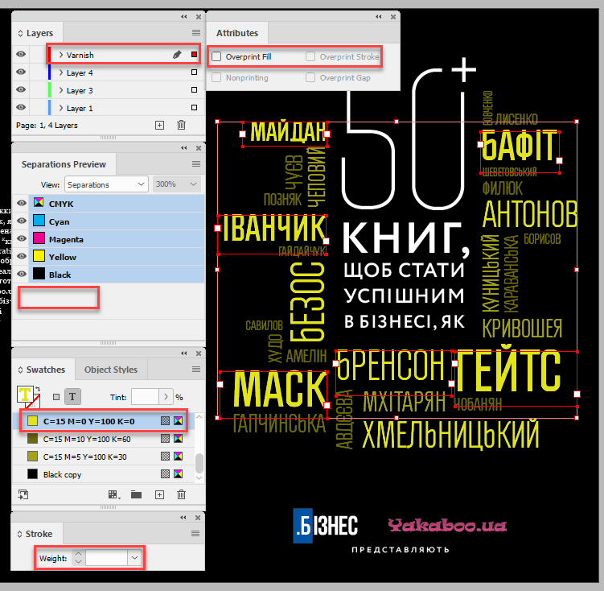
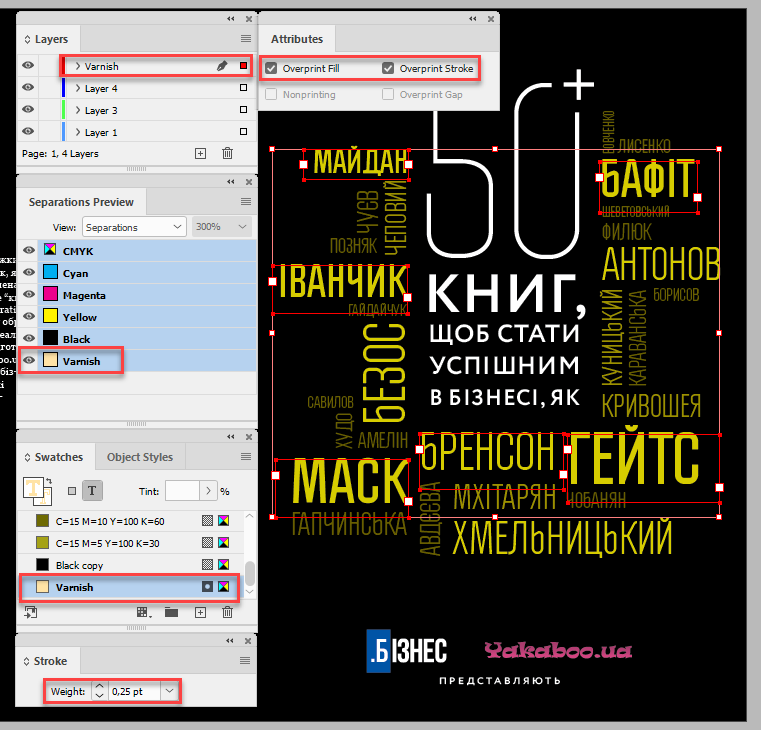
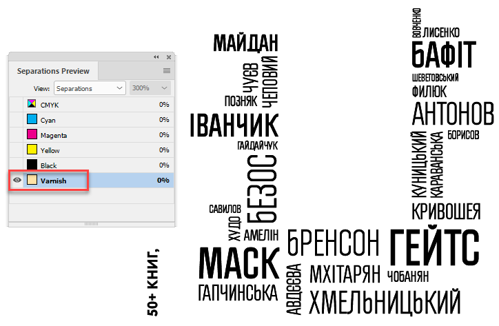

How to add varnish
Varnish needs to be a unique spot color, set to overprint. It can be on a separate layer if you like, but it isn’t required — you can just turn off the display for that color in Separations Preview. What you need to do to make the varnish objects depends entirely on what is getting varnished.
If it needs to overlay a path object with multiple strokes and fills, but not cover any otherwise unlinked area, you’ll need to copy the object and change the strokes and fills to the varnish spot color. It might be simplest to create a compound path for that. On the other hand, if you need to varnish a photo, just make a new frame in InDesign the same shape and fill it with varnish.
Back in May 2019, I had to add varnish to a book cover. I duplicated objects (text frames) to be varnished to a layer called Varnish. To speed up the process of applying the necessary settings for this particular project, I created a quick & dirty script that looped through all the text frames on the abovementioned layer applying the following to the text:
- 0.25 pts stroke
- the “Varnish” swatch (created automatically by the script if doesn’t exist yet)
- set overprint both to stroke and fill
The cover before running the script

The same cover after running the script

Only the Varnish plate is selected

Of course, you can easily adjust the script to your needs: for example, in the for-loop use all page items instead of text frames and, if required, check for the needed types of objects – rectangles, ovals, polygons, etc.
From here you can download the package of the abovementioned before and after sample files.
Click here to download the script.
See also:
Varnish Images by Mars Premedia
Varnish Maker by Mars Premedia